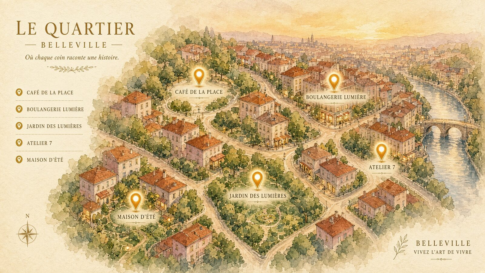
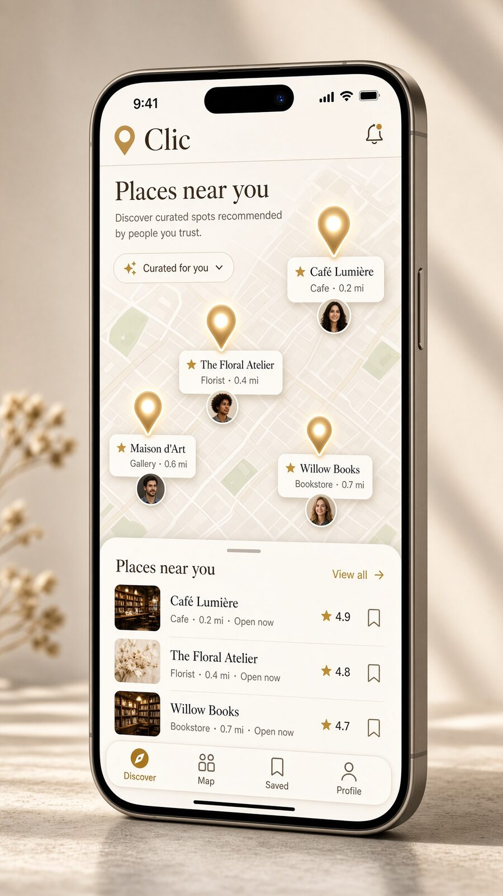

Concept · On the Map
Your next favorite place is already on someone’s map.
Clic turns personal recommendations into discoveries you can return to — places and things, with the people who stood behind them.
A living map of taste — not stars, people.
Every pin is a recommendation from someone in the community. You see who left it, why it mattered to them, and where it lives. Explore Places on a map. Browse Things people love. Keep what you find.

Illustrative neighborhood map · fictional places for this campaign
One pin, one person
The map only matters because of who left the mark.
Anonymous reviews blur together. On Clic, a place stays attached to the person who recommended it — and the reason they did.
-
Café de la Place
Sophie · “My Tuesday morning ritual — they always remember how I take my coffee.”
-
Willow Books
Alex · “The corner where I disappear for an hour and leave clearer.”
-
Riverbank Café
Maya · “Shaded terrace for long lunches when you need nowhere else to be.”
Discovery, made tangible
Open the map. Meet the recommenders.
Browse Places near you — or anywhere you care about — with faces next to every pin. Save what matters. Revisit when you need a place worth going.
Things live the same way: objects and finds people love, with the story still attached.

Illustrative product composition · not a live screenshot
Add your places.
Walk someone else’s map.
Clic is invite-only. A quiet network of people who recommend what they actually love — and remember who told them.
Prototype action · no waitlist is connected yet